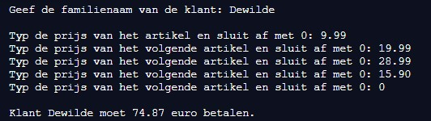

In een kledingzaak berekent een computerprogramma hoeveel de klant moet betalen. De gebruiker voert zijn familienaam in, vervolgens telt het programma de prijzen van de verschillende artikelen (tot de gebruiker 0 ingeeft). Daarna toont het programma hoeveel de klant moet betalen.
Hieronder vind je de schermafdruk van een uitvoering van het programma.
